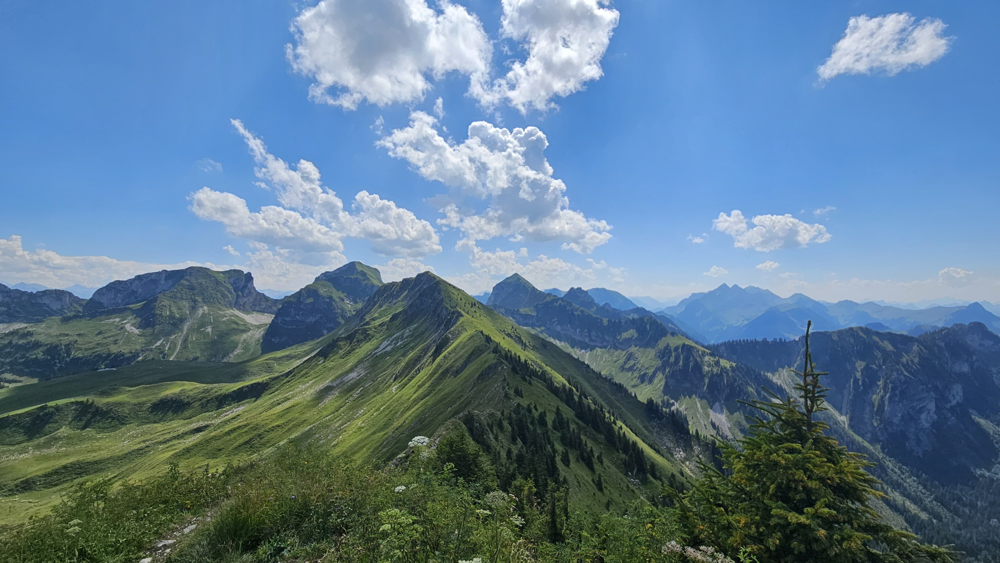
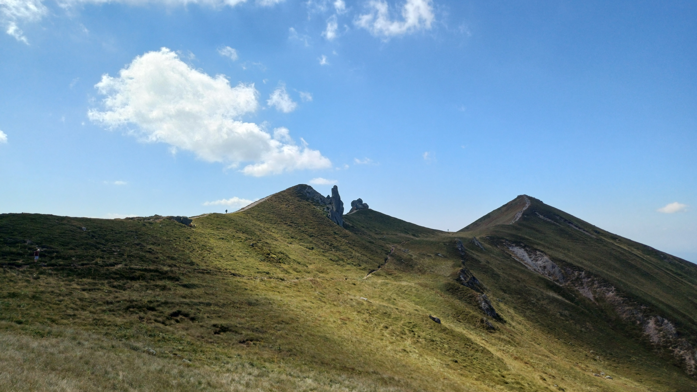

À PROPOS DE MOI
Je suis Melvin MAGE
Apprenti Administrateur Systèmes et Réseaux
En BUT Réseaux et Télécommunications à l'IUT d'Aubière, je suis alternant au sein de la Direction des Usages Numériques de Clermont Auvergne Métropole. Cette immersion me permet d'appliquer mes compétences sur des infrastructures réelles.
Passionné par le développement et l'automatisation, j'ai choisi ce cursus pour maîtriser l'architecture des réseaux et des systèmes, une base indispensable pour mon objectif : me spécialiser en cybersécurité.
Je suis quelqu'un de naturellement curieux, rigoureux et j'accorde une importance primordiale à l'esprit d'équipe.
À l'issue de mon BUT, j'ai pour perspective de poursuivre ma dynamique de montée en compétences en intégrant une école d'ingénieurs en alternance dès septembre 2028, afin de consolider mon expertise en sécurité numérique.
Voir mon CV
MES FORMATIONS
IUT Clermont Auvergne
Localisation : Aubière, Puy-de-Dôme (63)
Année : 2025 - Présent
Obtention du diplôme : En cours
Formation : BUT Réseaux et Télécommunications
Statut : Alternant Administrateur Systèmes et Réseaux (1ère année)
Objectif de la formation
Le BUT R&T est une formation en 3 ans visant à former des techniciens supérieurs compétents en réseaux, télécommunications et cybersécurité.
Pourquoi l'IUT d'Aubière ?
J'ai un temps hésité avec le BUT Informatique par goût pour le code, mais j'ai choisi le R&T pour comprendre l'informatique en profondeur. Je ne voulais pas rester en surface (le logiciel) mais maîtriser l'infrastructure qui le supporte. C'est pour moi la voie royale pour exceller plus tard en cybersécurité, un domaine qui me passionne et où la compréhension technique du réseau est indispensable.
Lycée Polyvalent Pierre Joël Bonté
Localisation : Riom, Puy-de-Dôme (63)
Année : 2022 - 2025
Obtention du diplôme : OUI - Mention Très Bien
Formation : Baccalauréat Général
Spécialités : Mathématiques, NSI (Numérique et Sciences Informatiques)
Objectif de la formation
L'objectif de mon parcours (spécialités Mathématiques et NSI, renforcées par l'option Maths Expertes) était d'acquérir une rigueur scientifique indispensable pour le supérieur. Ce cursus m'a permis d'assimiler très tôt des concepts avancés comme la programmation Python Orienté Objet, les bases de données (MySQL) et les protocoles réseaux (TCP/IP), me donnant une avance technique concrète pour le BUT.
Pourquoi ce parcours ?
J'ai saisi toutes les opportunités pour aller au-delà du programme scolaire. J'ai intégré la Section Européenne pour valider un niveau d'anglais solide (Certification Cambridge B2 avec compétences C1), essentiel pour la veille technologique. C'est aussi dans ce cadre que j'ai pu concrétiser ma passion en participant aux Trophées NSI (création d'un jeu vidéo en images 360°), une expérience qui a confirmé ma vocation pour l'informatique.
MES COMPÉTENCES
Organisation
Je planifie rigoureusement mes tâches pour concilier efficacement mes périodes en entreprise et mes cours à l'IUT.
Esprit d'équipe
Je m'investis activement, convaincu qu'on apprend plus vite en confrontant nos idées et en s'entraidant.
Curiosité
Je teste de nouveaux outils et suis l'actualité cyber pour ne jamais rester sur mes acquis.
Résilience
Je considère les difficultés comme un apprentissage et prends du recul pour mieux rebondir.
Sang-froid
Je reste calme et lucide en urgence pour éviter toute précipitation contre-productive.
Communication
J'expose clairement mon avis et discute des options pour avancer en toute transparence.
Compétences Réseaux
Installation & Configuration (Cisco)
Lors des SAE et TP, j'ai configuré des architectures complètes sur routeurs et switchs Cisco (IOS).
- CLI & Sécurisation : Navigation en ligne de commande, sécurisation des accès (SSH, mots de passe chiffrés).
- Commutation : Segmentation par VLANs, configuration des trunks (802.1Q) et du Spanning Tree.
- Routage : Mise en œuvre du routage statique et dynamique (RIPv2, OSPF multi-zones).
Services & Analyse
- Adressage : Maîtrise de l'IPv4 (VLSM, CIDR) et adressage IPv6 global/link-local.
- Services : Déploiement de serveurs DHCP et DNS (sous Linux et Windows Server).
- Analyse : Diagnostic réseau avec Wireshark (analyse de trames TCP/IP, ARP, ICMP).
Programmation & Système
Développement & Scripting
J'utilise le code pour automatiser l'administration système.
- Python : Algorithmique avancée, manipulation de fichiers, sockets réseaux, introduction à la POO.
- Bash / Shell : Scripts d'automatisation sous Linux (gestion utilisateurs, sauvegardes, logs).
- Web : HTML5, CSS3, PHP et interaction avec bases de données.
Administration Système
- Linux (Debian) : Gestion des droits (chmod/chown), processus, et installation de paquets.
- Virtualisation : Utilisation de VirtualBox pour déployer des machines virtuelles (Réseau NAT/Pont).
Télécommunications
Supports de Transmission
Étude physique du transport de l'information.
- Guidés : Câblage Cuivre (Catégories, Paires torsadées) et Fibre Optique (Soudure, Réflectométrie).
- Non-guidés : Propagation des ondes hertziennes, Wi-Fi.
Traitement du Signal
- Numérisation : Échantillonnage, Quantification, Codage.
- Modulation : Compréhension des modulations d'amplitude, de fréquence et de phase.
Téléphonie
Architecture & Administration IPBX
Déploiement et gestion d'une solution de téléphonie d'entreprise basée sur XiVO et Asterisk.
- Gestion des terminaux : Création et provisionnement d'utilisateurs (Deskphones Yealink, Softphones, terminaux sans fil DECT et postes analogiques via boîtiers ATA Cisco/Linksys).
- Trunking & Routage : Configuration de liaisons Trunk SIP, gestion des contextes d'appels, ainsi que des règles de routage pour les appels entrants (SDA) et sortants.
- Supervision : Monitoring en temps réel des services (daemons XiVO), analyse des statistiques de charge et diagnostic via la console CLI d'Asterisk.
Fonctionnalités Avancées & Signalisation
Mise en œuvre de services collaboratifs et routages complexes.
- Services additionnels : Configuration de groupes d'appels (stratégies simultanées/cycliques), de renvois d'appels (inconditionnels, sur non-réponse, DND) et création de salles de conférence.
- Messagerie unifiée : Interconnexion de l'IPBX avec un serveur de messagerie ( Zimbra via relais SMTP) pour l'envoi de notifications de messages vocaux par e-mail.
- Analyse de flux : Étude de la signalisation et des trames de protocole (REGISTER, 401 Unauthorized, INVITE, 200 OK) avec configuration du DTMF (RFC2833 / Auto).
Cybersécurité
Sécurité Système & Réseau
Application des bonnes pratiques dès la conception.
- Contrôle d'accès : Gestion stricte des droits utilisateurs (UGO sous Linux), ACLs sur routeurs Cisco.
- Sécurisation des flux : Utilisation systématique de SSH au lieu de Telnet, SFTP au lieu de FTP.
Hygiène Informatique
- Veille : Suivi des vulnérabilités (CVE) et de l'actualité cyber (ANSSI).
- Protection : Sensibilisation au Phishing, gestion des mots de passe robustes.
Langues & Communication
Anglais (Niveau B2)
L'anglais est mon outil de travail quotidien pour la tech.
- Documentation : Capacité à lire et comprendre des datasheets et documentations techniques complexes (Cisco, RFC).
- Communication : Aisance à l'oral et à l'écrit en contexte professionnel international.
Espagnol (Niveau B1+)
Je dispose également d'un niveau intermédiaire en espagnol. Je suis capable de comprendre les points essentiels d'une discussion et de m'exprimer sur des sujets familiers, une compétence complémentaire qui témoigne de ma curiosité culturelle.
MES EXPÉRIENCES
Ouvrier Travaux Publics - Eurovia
Lieu : Clermont-Ferrand (Puy-de-Dôme)
Période : Été 2025 (4 semaines au total)
Statut : Intérimaire
Situation initiale
À la suite de l'obtention de mon baccalauréat et avant d'intégrer le BUT R&T, j'ai souhaité mettre à profit ma période estivale pour découvrir le monde professionnel au travers d'une expérience exigeante. Plutôt que de choisir un emploi sédentaire, j'ai volontairement opté pour le secteur des Travaux Publics via l'agence d'intérim, intégrant ainsi les équipes d'Eurovia sur un projet d'envergure métropolitaine.
But
L'objectif de cette mission était de renforcer les équipes de voirie mobilisées sur le projet InspiRe (Bus à Haut Niveau de Service - BHNS). Mon but personnel était de développer mon adaptabilité, ma résistance à l'effort et ma capacité à travailler en équipe dans un environnement soumis à de fortes contraintes de délais et de sécurité.
Tâches
Intégré à une équipe de terrain, j'ai participé quotidiennement à l'avancée du chantier via diverses missions techniques :
- Génie Civil & Maçonnerie : Réalisation de coffrages bois sur mesure pour des regards techniques, calage et alignement précis de bordures de trottoirs et voies de bus.
- Terrassement : Préparation des fonds de forme et réalisation de tranchées pour le passage des réseaux, en respectant scrupuleusement les plans d'exécution.
- Sécurité & Logistique : Gestion du balisage, régulation de la circulation alternée et maintien de la propreté du site pour garantir la sécurité des usagers et des ouvriers.
Valeur ajoutée
Bien que cette expérience soit éloignée de l'informatique, elle m'a apporté des compétences transverses essentielles pour mon futur métier en réseaux et cybersécurité :
- La culture de la Sécurité (HSE) : J'ai intégré l'importance vitale du respect des procédures et du port des EPI (Équipements de Protection Individuelle). Cette rigueur face aux risques physiques est directement transposable à la gestion des risques numériques.
- Le travail d'équipe : J'ai appris à communiquer efficacement dans un environnement bruyant et stressant, où la coordination est indispensable pour éviter les accidents et tenir les délais.
- La résilience : Cette expérience m'a appris à garder ma concentration et mon efficacité même dans des conditions difficiles (chaleur, fatigue physique).
MES PROJETS
90's Life & Développement Lua
Rôle : Développeur
Contexte : Serveur GTA V RP (FiveM)
Objectif
Tout a commencé en 2022 par une simple curiosité qui s'est transformée en vocation : comprendre comment fonctionnaient les serveurs de jeu sur lesquels je jouais. Après avoir accumulé près de 1000 heures d'apprentissage autodidacte sur mes propres serveurs de test, j'ai rejoint le projet ambitieux "90's Life". Le but était technique et créatif : bâtir le tout premier serveur Roleplay francophone stable sur la map de Vice City, en repoussant les limites du moteur de jeu pour offrir une expérience fluide à une centaine de joueurs simultanés.
Ma mission
En tant que développeur, je ne voulais pas seulement que "ça marche", je voulais que ce soit parfait. J'ai développé une véritable obsession pour l'optimisation. Je passais mes nuits à refactoriser le code, traquant la moindre milliseconde de latence avec la commande resmon 1. Mon standard était non négociable : mes scripts devaient tourner à 0.00ms de consommation CPU.
J'ai touché à tout : de la base de données MySQL à l'interface utilisateur en HTML/CSS, en passant par le mapping 3D sur Blender et CodeWalker. Cette expertise technique m'a d'ailleurs ouvert des portes inattendues, m'amenant à échanger techniquement avec de gros créateurs de contenu comme Unwin et Lasalle pour la conception de leurs propres serveurs.
Résultat & Leçon de vie
Le lancement fut une réussite technique et humaine avec plus de 140 joueurs connectés simultanément et des retours enthousiastes sur la fluidité du gameplay. Mais l'aventure s'est arrêtée brutalement : un collaborateur ayant les pleins accès a supprimé l'intégralité du travail suite à un différend, détruisant des mois d'efforts en quelques secondes.
Cette expérience a été un électrochoc. Elle a transformé le joueur passionné en futur professionnel de la sécurité. J'ai appris "à la dure" qu'un code parfait ne sert à rien sans une politique de sécurité rigoureuse. C'est cet événement précis qui a forgé ma volonté de me spécialiser en Cybersécurité : pour que la gestion des accès (IAM) et les sauvegardes ne soient plus jamais une option, mais la fondation de tout projet.
GuessMyClass - Exploration 360°
Rôle : Développeur Fullstack & Graphiste
Contexte : Participation aux Trophées NSI
Objectif : Le Défi Trophées NSI
Dans le cadre du concours national des Trophées NSI, notre équipe de 5 étudiants a relevé le défi de concevoir une application innovante pour valoriser notre lycée. L'objectif était de créer un outil ludique pour les Journées Portes Ouvertes : une version interne de "GeoGuessr" où le visiteur doit se repérer à partir de photos 360° des salles de classe.
Ma mission : Le pont entre Design et Code
Mon rôle a été particulièrement polyvalent, assurant la cohérence entre la technique et le visuel :
- Architecture & Cartographie : J'ai redessiné intégralement les plans du lycée pour les intégrer au moteur du jeu, permettant un placement précis du marqueur (Gestion des étages RDC/Niveau 1).
- Développement Python : J'ai codé des interfaces clés comme la page de connexion (respectant le RGPD avec génération d'identifiants anonymes) et la page "À propos".
- Identité Visuelle : J'ai conçu la charte graphique complète, garantissant un rendu professionnel indispensable pour un concours de ce niveau. Cependant, nous devions seulement utiliser des librairies Python, donc le design était limité. Cela a vraiment été un frein à la direction artistique que j'ai proposé.
Résultat & Démonstration
Le projet a abouti à une application totalement fonctionnelle intégrant un système de score complexe, un classement SQL et un mode "Versus".
Planificateur & Analyse de Données ADE
Rôle : Développeur Python (Data)
Contexte : SAE 15 - Traitement de données
Objectif
L'objectif était de développer un outil capable d'aider les étudiants à organiser leurs retours de vacances. Le script devait interroger les données brutes de l'emploi du temps universitaire (ADE), filtrer des milliers d'entrées pour un groupe spécifique, et identifier automatiquement la date, l'heure et la salle du premier cours après chaque période de congés (Toussaint, Noël, Hiver, Printemps).
Ma mission
Au-delà de l'utilisation de la librairie Pandas pour manipuler les DataFrames (filtrage par groupe, tri chronologique), j'ai été confronté à un problème d'intégrité des données.
J'ai aussi été confronté à un problème d'intégrité critique. Le script fourni par l'enseignant pour la conversion .ics vers .csv comportait une faille logique : l'absence de gestion des fuseaux horaires, entraînant un décalage de 2 heures sur tout le planning.
J'ai audité le code pour identifier l'anomalie et développé un correctif gérant l'offset UTC. Soucieux de la réussite collective, j'ai documenté et partagé ce patch avec l'ensemble de la promotion, permettant à mes camarades d'éviter cette erreur silencieuse dans leurs propres projets.
Résultat
Le programme final permet d'exporter un planning précis et sans erreur. Voici un aperçu de la sortie du script :
Quel est votre groupe de TP ? 1) TP1 2) TP2 3) TP3 4) TP4 > 4
...
--- Rentrée des Vacances d'hiver --- Date : 2026-02-23 Heure : 09:00 Module : Téléphonie2 Salle : A5-A5bis Prof : TOUSSAINT JOEL
...
Voir le projet
La leçon "Cyber"
Ce projet m'a prouvé qu'en informatique, on ne peut jamais faire confiance aveuglément à la donnée brute ou aux scripts par défaut. La vérification de l'intégrité (ici, les horaires) est une étape clé que je retrouve aujourd'hui dans l'analyse de logs en sécurité.
Infrastructure Réseau & Système de Campus
Objectif du Projet
Conception et déploiement complet d'une architecture d'entreprise sécurisée, hautement disponible et redondante pour interconnecter différents services d'un campus universitaire.
Spécifications Techniques
- Ingénierie Réseau : Découpage d'adresses (VLSM), segmentation par VLANs (Administration, Enseignants, Étudiants, Wi-Fi, DMZ) et mise en œuvre du routage dynamique OSPF pour l'interconnexion des cœurs de réseau.
- Services Réseau Critiques : Configuration de serveurs DHCP (avec baux statiques et agents relais) et d'une architecture DNS pour la résolution locale et externe.
- Sécurité & Cloisonnement : Implémentation d'une DMZ pour isoler les serveurs publics (Web, Mail, DNS externe) et filtrage strict des flux inter-VLAN via des listes de contrôle d'accès (ACLs) et pare-feu.
- Services Applicatifs : Déploiement d'un serveur Web (Apache/Nginx) et d'un serveur de messagerie interne sécurisé.
État d'avancement & Résultats attendus
Phase actuelle : Maquetting et Tests Unitaires
La phase de conception théorique, le plan d'adressage complet et l'architecture des flux ont été validés en équipe. Le déploiement des maquettes virtuelles et la configuration des services sous Linux sont actuellement en cours de finalisation.
CyberSkills : Plateforme de Compétences Cyber
Présentation du Projet
Développement en binôme d'une solution web dynamique permettant aux utilisateurs de cartographier, suivre et valider leurs compétences techniques en sécurité informatique et systèmes.
Architecture & Fonctionnalités Implémentées
- Modélisation Relationnelle : Conception d'une base de données relationnelle sous MySQL structurant les utilisateurs, les catégories (Réseau, Cryptographie, Pentest...) et les niveaux d'acquisition.
- Backend Dynamique : Programmation en PHP pour la logique métier (authentification sécurisée, sessions utilisateurs, requêtes de traitement CRUD et affichage adaptatif des progressions).
- Interface Sur-Mesure : Intégration d'une interface utilisateur moderne, responsive et épurée développée de A à Z en HTML5 et CSS3 pour faciliter la lecture des tableaux de bord.
- Sécurisation Applicative : Sensibilisation et traitement des données contre les vulnérabilités du Web (sécurisation des requêtes SQL, hachage des mots de passe, gestion stricte des sessions).
DIVERS
Mes Randonnées
La randonnée est ma source d'équilibre. Qu'il s'agisse de parcourir mes sentiers locaux ou de m'attaquer à des massifs alpins, j'y trouve la persévérance nécessaire pour dépasser mes limites.

Lac Noir (Suisse) — Randonnée des deux vallées
Un parcours mémorable avec une section technique en limite d'escalade. Un pur banger qui demande autant de vigilance que de conditions physiques.

Le Massif du Sancy (Auvergne)
Mes terres d'entraînement. Des sorties régulières sur les lignes de crêtes escarpées du plus haut sommet du Massif central, parfaites pour maintenir le rythme et l'endurance.
Lac d'Oeschinen (Suisse) — Prochain Jalon
Planifié pour cet été 2026. Un trek d'envergure prévu autour de ce lac alpin niché au milieu des falaises du bachalp, combinant bivouac et dénivelé important.
Le Piano
Le piano me demande de la rigueur et de la concentration, mais c'est surtout le meilleur moyen que j'ai trouvé pour m'évader après mes journées d'apprentissage et de cours.
Morceau maîtrisé (100%)
Écouter "Van Gogh" sur YouTubeVan Gogh — Virginio Aiello
Appris en entier et maîtrisé au maximum. Un travail minutieux sur la fluidité et la sensibilité pour restituer toute la douceur de cette composition épurée.
Morceau maîtrisé
Écouter "Una Mattina" sur YouTubeUna Mattina — Ludovico Einaudi
Un classique incontournable de la musique contemporaine. Ce morceau m'a permis de travailler l'endurance, la régularité du tempo et l'indépendance de la main gauche.
En cours d'apprentissage
Écouter "Beanie" sur YouTubeBeanie — Chezile
Mon défi actuel. Un univers plus moderne et rythmé, idéal pour casser la routine et développer une meilleure coordination sur des accords syncopés.
MON C.V

ME CONTACTER
N'hésitez pas à me contacter pour échanger sur la cybersécurité ou pour de futures opportunités professionnelles !